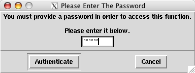
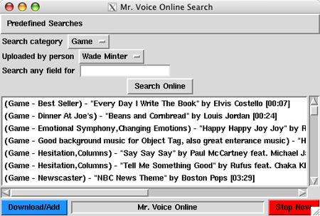

Acknowledgements
Thanks to my wife, Holly, for encouragement and editorial help.
Thanks to all of the voices at ComedyWorx-Raleigh, including (but not limited to) Jack Spencer, Larry Howard, Sam Adams, Bobby Rathbone, Ross White, Leo DiNapoli, Jason Matthews, and Bryan Cronk, as well as users in other cities, such as Kasey Christie, Randy Tennison, Bill Cernansky, Eric Wood, and Randy Tayler for testing and feedback.
Thanks to the ownership and players of ComedyWorx for giving me such a fun place to be a goofball for nearly five years.
Thanks to the authors and publishers, and contributors of the following books and newsgroups, without which none of this would have gotten done:
Learning Perl, 2nd Edition, by Randal Schwartz and Tom Christiansen, published by O'Reilly and Associates.
Programming Perl, 2nd Edition, by Larry Wall, Randal Schwartz and Tom Christiansen, published by O'Reilly and Associates.
Learning Perl/TK, by Nancy Walsh, published by O'Reilly and Associates.
Matering Perl/TK, by Steven Liddie and Nancy Walsh, published by O'Reilly and Associates.
Programming the Perl DBI, by Alligator Descartes & Tim Bunce, published by O'Reilly and Associates.
The newsgroup comp.lang.perl.tk
The following groups who have been willing to actually run this software!
SpoComedy (Spokane, WA)
ComedySportz (Portland, OR)
ComedyCity (Kansas City, MO)
ComedySportz (Los Angeles, CA)
ComedySportz (Provo, UT)
ComedySportz (Dallas/Ft. Worth, TX)
ComedySportz (Chicago, IL)
The Idiot Box (Greensboro, NC)
ComedySportz (Minneapolis, MN)
ComedySportz (Richmond, VA)
ComedySportz (Milwaukee, WI)
ComedySportz (Washington, DC)
Thanks to Derek Lane of the Raleigh Perl Mongers for suggesting the move to SQLite as a database backend.
And thanks to the Open Source and Free Software movements, letting people write software that doesn't suck!
Mr. Voice is dedicated to the memory of Andy Sepelak (4/4/78 - 3/11/02), a fine improviser and a good man. He will be missed.
Foreword
Mr. Voice was written with a very specific purpose in mind - to be the GUI frontend for an MP3 database I designed for the ComedyWorx Improv comedy group (formerly the Great American Comedy Company, formerly ComedySportz) in Raleigh, NC.
The Voices there over the ten years prior to my joining the club had worked out a very nice system of tapes and CDs that they used during ComedySportz shows. However, I ran into some issues: It was hard to have a variety of music available at a moment's notice, and there were problems with tapes not getting rewound. Being a computer geek, I wanted to use MP3s, but I couldn't find anything on the net written with my kind of situation in mind. So, armed with some books and Red Hat Linux 6.2 on my laptop, I got to work in the winter of 2000.
Because I wrote Mr. Voice in Perl/TK, it had the ability to go cross-platform, even though I was writing it for Linux. That led to me getting my first work on the Windows version of Perl.
Eventually, something useful began to take shape, and I put the first versions into production at ComedyWorx in early 2001. And it seems to, by and large, be working pretty well.
And so it goes. Because this was written for such a specific purpose, I have my doubts whether anyone else will find it useful. But it's out there, and if you're taking the time to read this, I hope you'll get something out of it!
What's New
A quick reference to what's changed between versions.
What's new in Version 2.1.2?
Fixed a couple of bugs that rendered song additions broken to the point of being unusable. Reported by Lanny in Dallas.
What's new in Version 2.1.1?
Fixed a bug where attempting to use the online version check when your internet connection was down would cause Mr. Voice to fail to start.
Fixed a long-standing bug where searching for a string with an apostrophe in it would cause an error.
Fixed a bug where adding a new song file with no ID3 information would blank out title and artist that you put in. Now the manual title and artist are only overwritten when there is valid ID3 data in the file.
What's new in Version 2.1?
First attempt at an integrated Mr. Voice Online system, with an XML-RPC backend. See the Mr. Voice Online section in the manual for details.
Add "bundles" - a way to put songs into the holding tank, then export them in a .zip file that can then be imported into someone else's Mr. Voice, keeping intact all information about the song.
Add an option to perform an online check to see if a new version of Mr. Voice is available, once a week. Controlled in the Preferences menu, and you need an internet connection (of course) for it to work.
Add a feature where if Windows or Linux users drag-and-drop a song file (or files) from the desktop onto the main search box, the add-new-song feature will be launched on those files.
Add the ability, through an option in the Preferences, to password-protect functions in Mr. Voice that would modify the database. Useful if you have people running sound who might have . . . descructive tendancies.
Several changes to make MacOS X more usable. The OS X release is packaged in an experimental "application bundle" much like "real" OS X applications. It also uses the free Audion audio player, instead of XMMS under X11.
New hotkey menu item to clear the Holding Tank in one stroke.
Minor database schema update (tracking MD5 checksums for song files in the database). The application should update your database automatically.
Improve debug logging
New Mr. Voice logo and website.
What's new in Version 2.0?
The MySQL database has been eliminated. Mr. Voice now runs an embedded database, SQLite. This means that you do not need to install, run, or configure MySQL in order to use Mr. Voice from the 2.0 release forward.
Why the change? Several reasons.
Complexity: Mr. Voice uses a very simple database backend - only two tables, and no complex queries. Running an entire relational database engine to manage those two tables was overkill, bbut it was the best solution I had when I started the project. SQLite looks like a much simpler solution, while still being able to do what the software needs.
Ease of Installation: Over the years, MySQL was the biggest cause of problems for users. Getting the database installed, the processes running, and the usernames and passwords straight were indeed a pain. SQLite has one configuration option - the path to a single file. That's it.
Resources: MySQL was a fairly heavyweight installation - several gigs of disk space, as well as needing to run an extra process to handle the database. On older or smaller systems, that could be a strain. SQLite doesn't need any extra processes running, and on my 1300-song database, it takes up 125Kb of disk space.
From my observation, it looks like SQLite will be a solid, reliable database engine. I certainly welcome feedback from users as to how well it works for them.
See Section 1.2.1 ("Upgrading to Mr. Voice 2.0") for details on how to upgrade a Mr. Voice 0.x or 1.x (MySQL) installation to a Mr. Voice 2.x (SQLite) setup.
There are two options that you can pass to the Mr. Voice executable. --config CONFIGFILENAME allows you to specify an alternate configuration file, useful if you can't write to the C: drive in Windows or if you want to run two different databases off of the same Mr. Voice installation. --logfile allows you to specify a logfile that will capture information generated by the Mr. Voice executable, which can be useful for debugging. You can specify a logfile name or, if you just do --logfile, it will be sent to C:\MRVOICE.LOG or ~/mrvoice.log.
"Invalid" songs (songs where there is an entry in the database, but no corresponding file on disk) now show up in red in the search box, instead of being hidden. This should solve problems where you were unable to delete a category because there were still songs in it, but a search of the category revealed nothing.
AAC (Advanced Audio Codec) files, also known as .mp4 or .m4a files, are now supported (playing them requires the proper plugin for your audio player of choice). Encrypted songs purchased from the iTunes Music Store (.m4p) apparently do not work.
Mr. Voice itself will offer to perform a default configuration the first time it's run on a new system. The defaults should be good enough for most people, but you always have the option of doing things manually. This replaces the old quicksetup.pl utility, which has been removed.
The look-and-feel of the main search box and the holding tank have changed, hopefully for the better. One visible change is that the song ID number is no longer displayed at the beginning of each line.
Mr. Voice now compiles under "use strict" in Perl. Ha! And they said it couldn't be done . . .
What's new in Version 1.10.6?
Support for Windows Media Audio (WMA) files under Windows. Suggested by kprobbins.
What's new in Version 1.10.4?
Fixed major issues with Drag-And-Drop that appeared when moving from the Tk-804.026 beta series to the final release.
What's new in Version 1.10.2?
Fixed a bug where, after doing a search, the main listbox got the focus instead of the search box you just typed into.
Updated to the final Tk-804 production release, Tk-804.026
What's new in Version 1.10?
You can Control-click in the main listbox to select multiple files, then drag all of those files at once into the Holding Tank.
The structure of the Edit/Delete Category boxes has changed to make them fit on the screen a bit better.
You can drag songs from either the main listbox or the Holding Tank onto a hotkey.
Clicking inside a lisbox (such as the main box or the Holding Tank), or performing a search, will allow you to use the up and down arrow keys to move around in that listbox.
The Holding Tank features a blue Launch Playlist button that will put the contents of the Holding Tank into a Winamp/XMMS playlist and start playing them.
You can now save and load the contents of the Holding Tank, just like you can with the Hotkeys, from options in the File menu.
The former standalone "orphans.pl" script, which searched your file directory for audio files that were no longer referenced by any database entry, has now been included in the main program. Look for it under Advanced Search->Find orphaned files.
If music licensing is a concern, you can now assign a Publisher to each song in the database, and restrict searches based on allowed publishers. The options to restrict the searches are in the File->Preferences menu.
Most category buttons now update to show which category you've selected.
The "dropdown" feature of the main search fields (Artist, Title, etc.) have been removed.
MySQL 4.x and Winamp 5.x are now the preferred environments under Windows, replacing MySQL 3.x and Winamp 2.x.
Installing Mr. Voice
Required Components
Mr. Voice currently runs under Unix-like operating systems (Linux/*BSD/etc) and Microsoft operating systems (Windows 95 or higher).
Microsoft Windows
The following components are required to run Mr. Voice under Windows 95 or higher.
An MP3 player. WinAmp version 5 is recommended. If you plan on playing Windows Media Audio (WMA) files, you will need at least WinAmp Version 5, Full install (not "Lite")
The httpQ plugin for WinAmp. Optional, but recommended, since it allows you to fade-stop songs.
The Ogg Vorbis plugin for WinAmp. Optional, but required if you want to play .ogg files.
The AAC plugin for WinAmp. Optional, but required if you want to use AAC/MP4 files
If, for some reason, you do not want to run the prebuilt mrvoice.exe file, and want to install all of the Perl modules that Mr. Voice requires by hand, follow the Unix/Linux instructions below and either build the modules by hand, or install the appropriate ActiveState PPM packages. But I doubt many Windows users will want to do that.
Unix/Linux/BSD
The following components are required to run Mr. Voice under Unix systems.
Perl version 5.8 (Should be provided with most modern Unix systems), plus the following perl modules (most available from CPAN):
An MP3 player. xmms is recommended.
AAC plugin for XMMS. Optional, but needed if you want to use AAC/MP4/M4A files.
Installation Steps
This will help you get Mr. Voice up and running on either a Unix or Windows system.
Upgrading to Mr. Voice 2.0
If you are installing Mr. Voice on a new machine, one which does not contain an existing Mr. Voice 0.x or 1.x installation, skip these steps and go straight to the installation section.
Mr. Voice 2.0 involves a migration from the old database backend (MySQL) used in Mr. Voice 1.10.6 and before, to a new database backend (SQLite). In order to migrate your data from the old database to the new one, you need to run the migration utility.
Windows users should double-click on the upgrade20.exe file. It will open up a DOS box. Follow the instructions on-screen and, if there are no errors, it will create the new Mr. Voice database file and update your configuration to point to it. If there are errors, your MySQL database will not be modified, so you can always use 1.10.6 or lower as usual while I'm working on the problem.
Unix users should run the tools/upgrade20.pl script, and it will do the same as in the Windows instructions.
Once you are comfortable that the upgrade worked properly and that you're set up in Mr. Voice 2.0, you can delete your old MySQL installation to save disk space and system resources.
Windows users can disable the MySQL service, while keeping the software installed, by right-clicking on the stoplight in the system tray and choosing WinNT->Stop Service. This will leave your old data alone, but the MySQL service will not be running and using system resources. To completely remove MySQL from your system, go to Add/Remove Programs, choose MySQL, and hit "Remove". Then, you can delete the C:\mysql directory. Once that is done, MySQL is gone, along with your old database.
For Unix users, you may want to go into the MySQL command shell and "drop database mrvoice", and/or uninstall MySQL from your system completely (if it was only being used for Mr. Voice, of course)
Unix Installation Instructions
Unpack the mrvoice-x.x.tar.gz archive. It will create a mrvoice-x.x directory. The mrvoice.pl file is the only one needed to run the program (meaning that you can move mrvoice.pl to another location after you're done configuring it), but there are other files in the archive, such as documentation, licenses, etc.
Compile and/or install any required software from above (perl modules, etc.). I will skip the software setup, assuming that if you're trying to run this on a Unix system, you're geeky enough to install the required stuff by yourself. ;-) If you run into issues, feel free to email me or check the software's website.
At this point, all of the software should be set up and ready for configuration!
Windows Installation Instructions
First, download WinAmp and install it the normal way, by double-clicking the installer icon and using the defaults provided.
If you're using the httpQ plugin for WinAmp, download its zip file and install it. Then, do the following steps:
Start WinAmp by itself, right-click on the "OAIDV" bar on the left of the window, choose Options->Preferences.
Go down to Plugins->General Purpose. You should see the httpQ plugin listed. Highlight that, and hit "configure".
Under the General tab, put in a password (your choosing), leave the port at 4800, and check the box to start the service automatically. Hit the Apply button, then the x at the top-right. Close the preferences, and exit from WinAmp. Remember the password you just set up - you will need it later.
Any other WinAmp plugins (OGG, AAC, etc.) should be installed in the default way following the instructions provided with the package.
Installing the Mr. Voice software on Windows
Unzip the mrvoice-current.zip file to your desired location. It will create a directory named mrvoice-x.x under the location that you choose. These instructions will assume that you unzip it to C:\, creating the C:\mrvoice-x.x\ directory, where x.x is the version number.
The first time you run Mr. Voice on a particular computer, you will need to set up the configuration. With later releases, you can just unzip the new version, and skip these remaining steps.
You will need a directory to store your MP3 files, and a directory to store your hotkey save files. I suggest C:\MP3\ for the MP3 directory and C:\hotkeys\ for the save files, but you can pick anything. Go ahead and create the directories now.
Finally, to actually run the software, double-click on the file mrvoice.exe. The program should start up! The first time you run the program (or, more specifically, if it can't find its configuration file), you will be given the option of creating a default configuration, or going into the preferences to set the values manually. The default should be good enough for most people. It sets up the following values, creating directories where needed:
MP3 Directory: C:\MP3
Hotkey Directory: C:\HOTKEYS
MP3 Player: C:\Program Files\Winamp\Winamp.exe
Database File: C:\MRVOICE.DB
After doing the initial setup, Mr. Voice will exit. Restart it, and it will initialize your database and run the program.
Configuring Mr. Voice
This section will take you through configuring the Mr. Voice software. Mr. Voice is configured via an external configuration file - this provides the most flexibility in keeping your configuration sane from one version to the next. On Unix, the default config file is named .mrvoicerc, and lives in your home directory. On Windows, the default filename is C:\mrvoice.cfg.
To provide an alternate configuration file (for example, if you would like to run two separate databases off of the same computer), you can pass the Mr. Voice program the "--config" flag. So on Windows, if you wanted to use an alternate config file, you would run "MRVOICE.EXE --config C:\MRVOICE-ALTERNATE.CFG", or on Unix "./mrvoice.pl --config /path/to/new/configfile".
If you start Mr. Voice without a configuration file, or if there is an error in your configuration, Mr. Voice will pop up a window asking if you want to create a default or manual configuration. If you choose default, it will set up a fairly standard installation for you. If you choose manual, you will be taken to the preferences window, allowing you to enter and edit the configuration information. Changes are then written out to the appropriate configuration file. The configuration options are detailed below.
Configuration Options and Variables
The options that you can set in the File->Preferences menu are listed below. After the name of each option, the actual variable name is given in parenthesis, in case you need to edit the configuration files manually (Manual configuration is detailed in section 2.1.1).
Database Options
Database Filename (db_file) - The file on your hard drive that contains the Mr. Voice SQLite database (C:\mrvoice.db by default on Windows, ~/mrvoice.db by default on Unix)
File Paths
MP3 Directory (filepath) - The path information that will be prepended to the filename retrieved from the database or, in other words, the directory where you store your MP3 files. Used to find the actual MP3 files on the local system. The user who is running Mr. Voice must have read/write permission into this directory.
Hotkey Directory (savepath) - This will be the default directory that hotkey save files will go into. The user running the program as must have read/write permission into that directory. Recommended to be different than the Mr. Voice install directory.
Search Options
Search ASCAP songs (search_ascap) - Enables searches of songs that have ASCAP set as the publisher field. Only needed if you are using song publishers in your database.
Search BMI songs (search_bmi) - Enables searches of songs that have BMI set as the publisher field. Only needed if you are using song publishers in your database.
Show Song Publisher (show_publisher) - Enables the display of the song publisher in the search results. Only needed if you are using song publishers in your database.
Search Other songs (search_other) - Enables searches of songs that have "Other" set as the publisher field. Only needed if you are using song publishers in your database.
Online Options
Enable Online Functionality (enable_online) - Enable this option if you want to use any of the online functionality (such as version checks or Mr. Voice Online). If this is not enabled, you will not get the menu items that offer online functionality. Obviously, enabling this without an internet connection on your Mr. Voice computer is a bit silly.
Check For New Versions (check_version) - If enabled, will check the Mr. Voice website once a week and alert you if a new version of Mr. Voice is available.
Mr. Voice Online key (online_key) - When you register for Mr. Voice online, you will be given a key password. Enter that here, or your Mr. Voice online functionality will fail. For information on how to get a key, see the Mr. Voice Online section in this manual.
Other
MP3 Player (mp3player) - The path to your MP3 player. Likely options are /usr/bin/xmms for Unix systems, and C:\Program Files\WinAmp\WinAmp.exe for Windows systems. This option is not used on Mac OS X, as it uses AppleScript to launch the Audion MP3 player.
Number of Dynamic Documents To Show (savefile_max) - The number of "most recently accessed hotkey files" to keep available under the File menu. Defaults to 4.
httpQ Password (httpq_pw) - The password used to connect to the httpQ plugin for WinAmp. Only useful under Windows if you're using the httpQ plugin. Otherwise it's ignored.
Write Access Password (write_password) - If this option is set, any attempt to perform an action that will modify the Mr. Voice system (adding a song, deleting a song, renaming a category, etc) will prompt for the password (once per session).
No password, no changes. Useful if you have people running Mr. Voice that you don't trust not to break things.
Manual Configuration
To troubleshoot, fine-tune changes, or skip the GUI alltogether, you can manually set up the configuration file. The configuration file consists of lines in the following format:
variable_name::value
Where variable_name is the name in parenthesis in the configuration listing above, followed by two colons, followed by the value you want to set the variable to. A sample file on Unix would look like this:
db_file::/home/mrvoice/mrvoice.db
filepath::/mp3/
savedir::/tmp/
mp3player::/usr/bin/xmms
savefile_max::4
httpq_pw::mypass
search_ascap::1
search_bmi::1
search_other::1
show_publisher::0
|
The Windows C:\MRVOICE.CFG file will look similar, but with Windows pathnames instead of Unix ones. The Mac config file (named mrvoice.cfg in your home folder) will look similar to the Unix one.
Using Mr. Voice
Now that you have Mr. Voice and other required software set up and configured, it's time to actually use it. First you have to populate the database with songs. Then you can do useful things with them. Look at the following screenshot of the main Mr. Voice window to familiarize yourself with the layout.
Adding, Deleting, and Editing Songs and Categories
Mr. Voice lets you set up categories, then put your songs into those categories for later use. So we'll address the categories first.
Categories
Category options are very simple. You can either add a category, edit its long (descriptive) name, or delete a category. All options can be found under the Categories menu on the main display.
To add a new category, choose Categories->Add Category. You will then have a box pop up where you can enter two items: The Category Code and the Category Description.
The Category Code is a short (4-5 letters max.) identifier for the category, whereas the Category Description is the longer name that you'll normally see. However, make the Category Code something useful, because it will be displayed next to the Choose Category button on the main window. For example, if you want a category called "Joe's Fly Tunes", you could use "JOE" for the Category Code and "Joe's Fly Tunes" for the category description.To delete a category, choose Categories->Delete Category. A box will pop up listing all of your defined categories. You can choose the button next to the category that you would like to delete, then press Ok to delete the category.
 | You cannot delete a category if it still has songs in it. Delete/edit all songs out of the category before trying to delete it. |
Finally, you can edit a category, by choosing the Categories->Edit Category menu. Once there, you can edit the long name, but not the short code, of the category.
Songs
Songs are the audio data that you're trying to play. You can use any sort of audio data that your audio player can handle, but Mr. Voice can figure out things like playing time for MP3, WAV, Ogg Vorbis, AAC, and WMA files. If you're not trying to store, categorize, and play audio data, then you're probably using the wrong program! This manual will refer to the audio data that you are storing as "songs", even though they can, of course, be any kind of audio. To manipulate songs in the database, there are three main actions: adding songs, deleting songs, and editing songs.
To insert a new song into the database, choose Songs->Add New Song. A box will pop up for the needed information:
Song Title: This is where you put the title of the song that you are adding.
Artist: The artist responsible for the song. This is an optional item.
Category: Pressing the Choose Category button beside this entry will give you a list of the categories that you currently have defined. You must choose one of these categories to place the song into.
Category Extra Info: Kind of a "hodgepodge" entry, this information can be whatever you want. At ComedyWorx, we use it as a modifier for the category. So if the category is "Game", the Extra Info is the name of the game. If the category is for Player Intros, the Extra Info will tell us whether it's specifically for a referee, dimwit, or whatnot. So, basically it's just free-form for whatever you need, and is an optional field.
Publisher: This field is for the publisher of the song. Current values are ASCAP, BMI, or Other. The default value is Other, which should be fine for people who don't want to bother with publisher information. But if you're using Mr. Voice in an organization that needs this information, here's where you can put it.
File To Add: This is where you give Mr. Voice the path to the actual audio file that you want to add. Clicking the Select File button will bring up a familiar "file chooser" box. The screenshot below is from a Linux system - Windows users will see the familiar Windows file chooser box.
Use this to go to the location of your file, left-click on the name of the file, then click Open. The name of the file should now be listed in the File To Add box. If the file you are adding is an MP3, OGG, AAC, or WMA with valid tag information, it will automatically fill in the Title and Artist fields with that information.Preview Song: Once you have selected a file, you can press this button to hear the song. Useful for making sure you have the song you want before you add it.

You can now press the Ok button to add the song. If all goes well, you should see a message that the file was added to the database. If not, Mr. Voice should tell you what went wrong, and let you go back and fix the entry.
 | Mr. Voice actually makes a copy of the file that you select, renames it to a standard form, and places the new copy in the location given by the $filepath variable that you defined in the setup. Your original audio file is not used after the copy is made, so you can feel free to delete it. |
It can be tedious to add songs one at a time if you have many files to add. New in version 1.8 is the Songs->Bulk-Add Songs Into Category menu option. Upon choosing this, you will be prompted for a category and a directory. Select the category, and a directory that contains the set of MP3, OGG, AAC, or WMA files that you would like to add to that category. Mr. Voice will then use the title and artist tags stored in the files to automatically add those files into your selected category. If you need to add Extra Info or modify any other fields, you will need to do that after the fact, but this should be a good way to add lots of data at once. You can also specify a publisher here, useful when adding a whole CD's worth of songs with the same publisher.
There are two other ways to add songs. The first is that you can select song files on your desktop or file explorer, and drop them onto the main search box of Mr. Voice. When you do that, the Add New Song function will be launched on those files. Finally, you can choose the Songs->Add Songs From Bundle menu item. That will allow you to import a Mr. Voice "bundle" ZIP file. All songs in the bundle will be added, along with all information about the file, and any needed categories will be automatically created.
To delete a song, you must have at least one displayed and selected in the main search results box. Searching is covered later, but if you hit the Do Search button, it should show you all of the songs in your database.
Once you have some songs displayed, left-click once on the name of the song that you want to delete, or select several songs by pressing Control or Shift while selecting, then choose Songs->Delete Currently Selected Song. You can also right-click on the name of the song or songs and choose the Delete Song option. A box will pop up asking you to confirm the deletion, and also presenting a checkbox labeled Delete File On Disk.
If you do not select this, the song or songs will be removed from the database, but the actual audio file on disk, located at $filepath, will remain. If you do select this option, the song or songs will be removed from the database AND the audio file on disk will be deleted. | If you do not have a song selected in the main display box and choose Songs->Delete Currently Selected Song or Songs->Edit Currently Selected Song, then nothing will happen. This is normal. If you are trying to edit or delete a song and don't get the repective boxes showing up on-screen, make sure that you have a song highlighted. |
Finally, if you want to edit a song in the database, left-click a song in the main display window, and choose Songs->Edit Currently Selected Song. You can also right-click on a song and choose the Edit Song option. A box will pop up that is similar to the one for Songs->Add New Song, except without the file selector option. You can make any needed changes to the song, then press Ok to commit them.
| Shortcut! |
|---|---|
You can also right-click a song in the main display box to bring up a shortcut menu. From this menu, you can choose to edit or delete the selected song. |
If you have multiple songs selected and choose to edit, you will only be able to edit the Extra Info, Category, or Artist fields, not the Title.
There is a menu choice named Songs->Update Song Times/MD5s. This will re-index all your song files, updating their play times and the MD5 sum (used in Mr. Voice online to see if two songs are the same). While in theory this information should be set when the song is added and never change, you may want to run it every once in a while to make sure the information is correct. If you edit a file in your MP3 directory manually, or replace a file in the MP3 directory directly with a new one, you will need to run this procedure. This process could take a while, depending on the speed of your computer, so you may not want to run it in the middle of a show.
Orphaned Files
Orphaned files are audio files in your MP3 directory that are not referenced by any entries in the Mr. Voice database. They normally result from deleting a song from the database without deleting the file on disk. Since nothing in the database knows about them, they are unneeded and just take up space.
In previous versions of Mr. Voice, a separate program named orphans.pl was provided to weed out these old files. However, with Mr. Voice 1.10, the orphan checker is integrated into the main program. You can find it under Advanced Search->Find orphaned files. When you choose that menu item, Mr. Voice will scan your MP3 directory and compare it with your database, and if it finds any orphaned files, display them for you.
When the Orphaned File report is displayed, you have a couple of choices. If you just want to read the report without taking action, you can close the window and no changes will be made. You can also select one or more files from the report to delete. To do so, Control-click on a filename to add it to the selection group. Or, hit the Select All button to select all entries, and Control-click to deselect any you do not want to delete. Then press the Delete Selected button to remove all selected files from your computer.
Searching and Playing Songs
Now that you've learned how to put songs into the database, it's time to do something with them. The following section will show you the basics of searching and playing the songs in your database
Searching The Database
The search fields of the main Mr. Voice window contain the items that you can search for. You can use any combination of the fields to search, with the exception of the OR any field contains field, which overrides everything except the category. For the fields where you can type in text, there is an arrow icon to the right of the text entry box. If you click that arrow, a menu will pop up listing all the things you have searched for in that category. You can use this menu to quickly re-select something that you have already searched for. Let's look at the fields in detail:
Choose Category: This allows you to set the category to search within. You can either choose a specific category, or the Any Category option, which will search all defined categories. The short name of the currently selected category will be displayed beside the menu.
Extra info: Text placed in this box will be compared with the "Extra Info" field of each song. This, like each of the text entry fields, is a case-insensitive substring match, meaning that if you search for "eat", it will match the words "Eat", "Beatles", "EATING", etc.
Artist: Text in this box will be compared with the "Artist" field of the songs.
Title: Text in this box will be compared with the "Title" field of the songs.
Any Field: Text in this box will be compared to the Title, Artist, and Extra Info fields of each song, and return any song that has a match in any of those fields. So searching the Any Field box for "eat" will return songs by The Beatles, the song titled "Masterpeace Theatre Theme", or one with the extra info of "Featured". The only thing that the Any Field does NOT search is the Category - you will need to select that manually.
After you have filled in the information that you would like to search for, you can either press the Enter key, or press the Do Search button. The status bar will tell you how many matching entries your search found, and display the results in the Search Results box. If you have any songs in your database where there is no matching audio file on disk, they will show up in red as "invalid" files. If you try to play these songs, nothing will happen (as there's no actual file to play!). Invalid songs should either be deleted, or the expected file should be moved into place. If all of your songs show up as invalid, that's a good sign that you have your MP3 Directory set incorrectly in the preferences.
If you have chosen in the File->Preferences menu to restrict searches based on the Publisher, that will affect your search results - only searches from your select publisher group will end up displayed.
If your mouse has a scroll-wheel on it, you can use the wheel to scroll the list of search results up and down.
There is also an Advanced Search menu. On that menu, you can choose to have Mr. Voice show you all the song that have changed during the current day, or over the past 7, 14, or 30 days. You can also search for songs that were added or changed over an arbitrary date range via the Advanced Date Search menu.
Playing Songs
At this point, you have added songs to the database, and you have searched for songs. Now, with some songs listed in the Search Results box, you're ready to play the songs!
To play a song, you can left-click on the song in the Search Results box (the song should become highlighed when you do this), and press the green Play Now button. While a song is highlighted, you can also press Control+P to start the song playing. You can also double-click the song in the Search Results box, or right-click the song and choose the Play Song option. When you do this, your audio player should spring to life, and you should hear the song coming out of the speakers. Congratulations! It works!
To stop the song, you can either press the red Stop Now button, or press the Esc key on your keyboard. Play should then stop.
Windows users who have installed the httpQ plugin (and entered its password under the File+Preferences->Other menu) have an additional option. Pressing the Shift key while either clicking on the Stop Now button or pressing the Escape key will cause the song to fade out before stopping, over a period of a couple of seconds.
Exiting Mr. Voice
To exit Mr. Voice, choose File->Exit, or press Control+X. Mr. Voice will prompt you to confirm that you want to exit, and if you do, the program will exit and your audio player will close.
Hotkeys
Hotkeys are a convenient way of having songs at the ready when you need them. They can be used for common situations, events where you need a range of songs ready with little notice, and so forth. You can also save hotkeys to files for later use.
Configuring Hotkeys
To set up a hotkey, you must first search for a song and have it displayed in the search results box. The available keys are the function keys F1 through F12. You can bind a song to more than one hotkey if you choose. To assign a song to a hotkey, open the Show Hotkeys window, left-click on a song within the Search Results box, and drag it over to the name of a hotkey (F1 through F12), and drop it on the name. The song you dragged will then be assigned to the hotkey that you dropped it on.
You can also drags songs from the Holding Tank onto a hotkey, just like you can from the main search box.
To see which hotkeys you currently have defined, choose Hotkeys->Show Hotkeys from the main menu. You can also press Control+H. That will bring up a menu showing each of the 12 hotkeys, and beside the key name, the filename of the song that is bound to the key. If you leave this window up, you can see it change as you add or remove hotkeys.
To remove hotkeys, you have two choices: Remove keys individually, or remove them all in one fell swoop. To remove all hotkeys, choose Hotkeys->Clear All Hotkeys from the main menubar. This will do exactly what it implies - reset all hotkeys back to empty. You can also, from the Hotkeys->Show Hotkeys menu, press the buttons beside any key listing, and choose the Clear Selected button to clear out just the keys that you select, while leaving the others alone.
If you clear all hotkeys, the Hotkeys->Restore Hotkeys option becomes available. It allows you to return your hotkeys to the state they were in immediately prior to the clearing. This exists in case you accidentally clear hotkeys that you don't mean to. Note that the Restore Hotkeys feature currently only works for the Clear All Hotkeys and Open Hotkey File (discussed below) options.
You can also lock the hotkeys by choosing the Hotkeys->Lock Hotkeys option. When hotkeys are locked, a checkmark appears beside the menu item, and you will not be able to add or clear any hotkeys until you deselect the lock option.
Using Hotkeys
To use hotkeys once you have defined them, simply make sure that a Mr. Voice window is selected, and press the hotkey for the song that you want. The song should immediately begin playing.
Saving and Loading Hotkeys
To make the use of hotkeys more convenient, you can save groups of hotkeys to a file for later retrieval. To use this feature, first assign songs to hotkeys like you want. Then, choose File->Save Hotkeys To A File, or press Control+S. A box will pop up where you can select the filename to save the hotkeys under. The file by default will be saved in the directory that you defined in the $savedir variable during configuration. Simply enter the filename that you want in the box labeled Filename, and press the Save File button. The filename will have the extension ".mrv" appended to it, and get written to disk.
| If you save a hotkey file with the name default.mrv, that hotkey file will be automatically loaded every time you start Mr. Voice. |
To load a saved hotkey file, simply choose File->Open Hotkey File, or press Control+O. The file box will pop up, and you can choose the name of the hotkey file that you want to load. Choosing the filename and pressing the Open File button will load the hotkeys defined in the file, and will overwrite all hotkeys that you currently have defined. If you do this and want your old hotkeys back, choose Hotkeys->Restore Hotkeys. When you load a saved hotkeys file, the Hotkeys window will display (if it is not up already).
The most recent hotkey files that you have accessed via a save or open will be listed on the File->Recent Files menu. These filenames can be selected directly for one-click access that recently-used hotkey files. To adjust the number of files that are displayed, use the File->Preferences menu. Four is the default.
The Holding Tank
Somewhere in a netherworld between the search box and hotkeys exists the Holding Tank. The Holding Tank can be accessed via the Hotkeys->Show Holding Tank menu choice or by pressing Control+T. You can drag songs to it, like with the Hotkeys window. Unlike the Hotkeys window, though, you can have an unlimited number of songs in there at any time, but you can't get one-button access to playing those songs. New in Mr. Voice 1.10, you can save and load the contents of Holding Tanks to a file, just like hotkeys. Find those options under the File menu. You can also export the contents of the Holding Tank as a "bundle" - a special zip file that can be imported in another copy of Mr. Voice, while retaining all the information about the songs.
You populate the Holding Tank by dragging and dropping songs from the search results box onto it. The items in the Holding Tank will appear in the order you add them. To reorder the songs within the Holding Tank, highlight the song you want to move and press the Up Arrow or Down Arrow buttons to move it up and down in the list.
To play a song from the Holding Tank, you can either double-click the song in the Holding Tank window, or single-click the song and press the Play button.
You can use the up or down arrow buttons on either side of the Holding Tank to reorder the songs. That can come in handy when you press the blue Launch Playlist button, which will launch a playlist in WinAmp or XMMS of all the songs in your Holding Tank, in the order they are displayed.
To remove a song from the holding tank, click on the name of the song, then press the Clear Selected button. You can press the Control key while clicking to select more than one song, then use the Clear Selected button to clear all selected songs. Or, for a quicker way to clear all songs from the Holding Tank, use the Hotkeys->Flush the Holding Tank menu selection to wipe it with one fell swoop.
The Holding Tank allows you to easily move songs between installations of Mr. Voice, via a new feature called bundles. To create a bundle, move songs into the holding tank. Then, when you're finished, choose the Hotkeys->Export Holding Tank As Bundle option. That will write a .zip file to your root directory (see the status line of the Mr. Voice window for the specific path). That zip file contains the MP3 files for the songs you expored, plus a special XML file that contains the information for the songs (title, artist, extra info, category, etc).
You can then transfer that .zip file to another system, and import it into that installation of Mr. Voice. The songs will be copied into its database, with the song information from the original.
Mr. Voice Online
What Is Mr. Voice Online?
Mr. Voice Online is an attempt to improve the selection of audio available for improv shows, as well as to build a community among people running sound for improv clubs. The first attempt at Mr. Voice Online was a small subsection of the Mr. Voice website, where people could upload or download files. It suffered from lack of use. My theory was that it may be cumbersome to lug files around, have to re-enter the song information, and upload songs through a website.
For Mr. Voice 2.1, I've integrated the online functionality into the Mr. Voice application itself. If you have an internet connection on your Mr. Voice system, you can now upload, download, and search songs in the online database directly from Mr. Voice itself. We shall see if this proves easier to use.
To get started with Mr. Voice online, you will need a key. I am not intending this project to turn into a large-scale filesharing community, so I am restricting use to people involved in improv clubs or other legitimate environments. Getting a key, if you meet those conditions, is simple. Send an email to minter@mrvoice.net with your name, the name of your group, and your website. I'll send you back a key string that looks something like "i8bXtjCl+m2jL45BsiOia7". Put that string in the Online Options section of your Preferences, check the "Enable online functionality" button, and you're set.
Using Mr. Voice Online
If you enable online functionality, you will see a new menu option - Advanced Search->Search Mr. Voice Online. Selecting that will bring up the Mr. Voice Online window, as seen below.

As you can see, it's a scaled-down version of the normal Mr. Voice window. You can search for text in any field (title, artist, extra info), or narrow your search down by category or by the person who uploaded the song (in case you have a particular person's contributions you want to browse). There are also currently a couple of options in the Predefined Searches menu. You can show all songs on Mr. Voice Online that do not exist on your system (useful for finding things to download), or you can search all songs on your system that do not exist on Mr. Voice Online (useful for uploading).
Downloading Songs
Once you have performed a search, and have some songs in the Mr. Voice Online window, you can download them. Currently downloads are limited to one at a time - multi-song downloads will be added in a future version. You will notice that the button that reads Play Now in the normal Mr. Voice window is now blue and reads Download/Add. Double-clicking a song in the Mr. Voice Online window, or clicking the Download/Add button, will download the song in the background (which could take some time, depending on the size of the file and the speed of your internet connection).
Once the song is downloaded, the standard Add New Song window will be displayed, loaded up with information about the downloaded song. You can preview the song here, to see if you want it. If you click Ok (be sure to select a category), the song will be added to your local system. If you click Cancel, nothing happens.
Uploading Songs
You upload songs from the normal Mr. Voice window. When you have a song listed in the main window, you can right-click on it to see a menu. On this menu will be an option named Upload to Mr. Voice Online. Song uploads are currently limited to one-at-a-time - multi-song uploads are planned for a future release.
Choosing that menu item will immediately attempt to upload the song to Mr. Voice online. It will check to be sure that file does not already exist, then start the upload (which could take a while, depending on the size of the file and the speed of your internet connection). Once the file is uploaded, the status bar will update with the new online song ID of the song, plus the time it took to upload.
| Note that when you perform the Predefined Searches->Show Local Songs That Are Not Online search, the local songs will show up in the main Mr. Voice window, not the Mr. Voice online window. This is because you have to do uploads from the main window. |
Troubleshooting and FAQs
This section will eventually contain answers to frequently asked questions, troubleshooting ideas, and helpful tips.
I double-click the Mr. Voice icon under Windows, and the program doesn't come up. What's wrong?
To diagnose a problem like this, Mr. Voice sends debugging output to a file. That file is C:/mrvoice.log under Windows or ~/mrvoice.log under Unix. You can use that file to figure out what's going wrong, or send it to me so I can debug the problem.
When I try to fade-stop a song, I get a "pop" of volume at the end. How do I fix that?
Randy in KC has written up steps that he used to solve this problem. He recommends doing the following. Right mouse click on Winamp. Choose Options->Preferences->Plug Ins->Output. Highlight DirectSound Output v 2.2.10. Click Configure. Choose Fading Tab. Select "Old Style Fade on pause". Hit Apply.
Now that I've got all this stuff in my database, how do I back it up?
There are two things that need to be taken into account when you do backups: The MP3 files themselves, and the information in the database.
BACKING UP THE MP3 FILES
This is both the easiest and hardest part of the equation. It's the easiest because backing up the MP3 files involves only copying them to another place, so that you are covered in case something happens to the files themselves (disk crash, accidental deletion, etc.)
It's the hardest, though, because you're generally talking about a gigabyte-plus of data, which limits your transfer options. Some suggestions for MP3 file backups include:
A second hard drive in your computer. Will protect against a drive crash, OS crash, or accidental deletion, but will not protect against on-site disasters (physical damage to the computer, fire, locusts, etc.)
Burning files to CD/DVD. Easy off-site storage, but requires the purchase of a burner if you don't already have one.
Copying files to another computer over a network. This is what I do - I have a network card (~$15) in the voice computer, and use an ethernet cable to copy the files over to my laptop. Transfer time is fast. You can also use things like a USB link cable to transfer files between computers.
Copying the files onto several thousand floppy disks. Time-consuming and not recommended. ;-)
BACKING UP THE DATABASE
Backing up the files themselves is good, but there's another step involved. You need to back up the information in your database, so that all of your meta-data (categories, extra info, etc.) isn't lost. The database actually drives the Mr. Voice program, too, so if you lose the database data, Mr. Voice will be pretty useless.
Beginning with Mr. Voice version 1.7, you can use the File->Backup Database To A File menu choice to export the contents of your database to a file. You can then copy that file to a safe place. Also, beginning with version 2.0, you can back up the SQLite .db file itself to a safe place. Just copy the .db file to another computer, and you've got the same database that the original one had! Check the File->Preferences menu for the location of the file.
OTHER THINGS TO BACKUP
You may also want to back up your saved hotkey files from the directory listed in the File->Preferences menu, as well as C:\mrvoice.cfg on Windows or ~/.mrvoicerc on Unix. Backing up all of this data should allow you to completely restore your system in the event that something goes wrong.
WHEN TO BACKUP?
In the event of a system failure, you will lose all of the changes to your system between the last time you backed up, and the time of the failure. So keep that in mind when you decide how often to back up. For some, backups every month or two might work, for others, weekly or more frequent.
If you have questions or tips that you think should be addressed here, email them to me.
Contributing, Contacting, and Bug Reporting
If you like this program, and know of a way to make it better, feel free to modify it. This software is released under the GNU General Public License, so read the COPYING file or visit the GNU project for information on license conditions.
If you make a cool modification to this program, feel free to send a diff to me, and I'll incorporate it into the main body of the program.
Considering I'm probably the only person using this program, if you even USE this software, feel free to send me an email and let me know that you've found it useful. Otherwise, I'm just talking to myself. :-)
Feel free to report any bugs, feature requests, etc. to me via the Mr. Voice Bugzilla. As this is a specific-purpose project, there's no guarantee that I'll do it, but I'm glad to listen to any suggestions. Check the TODO file to see stuff I'm currently working on.
The software's new home on the web is http://www.mrvoice.net/ - check there for any news and developments.
Software License
This software is released under the terms of the GNU General Public License. The preamble of the license is listed below. Please see the file named COPYING included in the Mr. Voice package for the full license, or view it online at http://www.gnu.org/licenses/gpl.html.
GNU GENERAL PUBLIC LICENSE
Version 2, June 1991
Copyright (C) 1989, 1991 Free Software Foundation, Inc.
59 Temple Place, Suite 330, Boston, MA 02111-1307 USA
Everyone is permitted to copy and distribute verbatim copies
of this license document, but changing it is not allowed.
Preamble
The licenses for most software are designed to take away your
freedom to share and change it. By contrast, the GNU General Public
License is intended to guarantee your freedom to share and change free
software--to make sure the software is free for all its users. This
General Public License applies to most of the Free Software
Foundation's software and to any other program whose authors commit to
using it. (Some other Free Software Foundation software is covered by
the GNU Library General Public License instead.) You can apply it to
your programs, too.
When we speak of free software, we are referring to freedom, not
price. Our General Public Licenses are designed to make sure that you
have the freedom to distribute copies of free software (and charge for
this service if you wish), that you receive source code or can get it
if you want it, that you can change the software or use pieces of it
in new free programs; and that you know you can do these things.
To protect your rights, we need to make restrictions that forbid
anyone to deny you these rights or to ask you to surrender the rights.
These restrictions translate to certain responsibilities for you if you
distribute copies of the software, or if you modify it.
For example, if you distribute copies of such a program, whether
gratis or for a fee, you must give the recipients all the rights that
you have. You must make sure that they, too, receive or can get the
source code. And you must show them these terms so they know their
rights.
We protect your rights with two steps: (1) copyright the software, and
(2) offer you this license which gives you legal permission to copy,
distribute and/or modify the software.
Also, for each author's protection and ours, we want to make certain
that everyone understands that there is no warranty for this free
software. If the software is modified by someone else and passed on, we
want its recipients to know that what they have is not the original, so
that any problems introduced by others will not reflect on the original
authors' reputations.
Finally, any free program is threatened constantly by software
patents. We wish to avoid the danger that redistributors of a free
program will individually obtain patent licenses, in effect making the
program proprietary. To prevent this, we have made it clear that any
patent must be licensed for everyone's free use or not licensed at all.
The precise terms and conditions for copying, distribution and
modification follow.